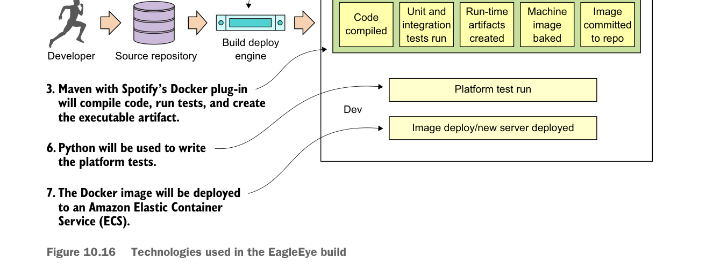

Technologies used in the EagleEye build
- Maven/Spotify Docker Plugin (https://github.com/spotify/docker-maven-plugin)—While we use vanilla Maven to compile, test, and package Java code, a key Maven plug-in we use is Spotify’s Docker plugin. This plugin allows us to kick off the creation of a Docker build right from within Maven.
- Docker (https://www.docker.com/)—I chose Docker as our container platform for two reasons. First, Docker is portable across multiple cloud providers. I can take the same Docker container and deploy it to AWS, Azure, or Cloud Foundry with a minimal amount of work. Second, Docker is lightweight. By the end of this book, you’ve built and deployed approximately 10 Docker containers (including a database server, messaging platform, and a search engine). Deploying the same number of virtual machines on a local desktop would be difficult due to the sheer size and speed of each image. The setup and configuration of Docker, Maven, and Spotify won’t be covered in this chapter, but is instead covered in appendix A.
- Docker Hub (https://hub.docker.com)—After a service has been built and a Docker image has been created, it’s tagged with a unique identifier and pushed to a central repository. For the Docker image repository, I chose to use Docker hub, Docker corporation’s public image repository.